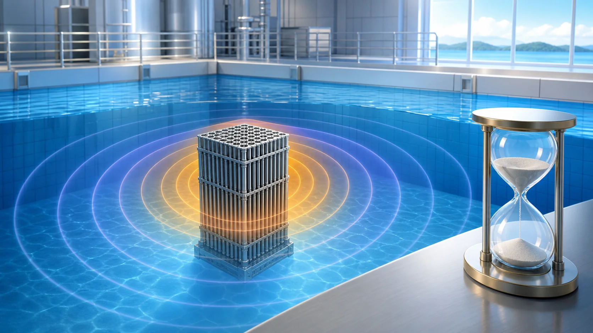
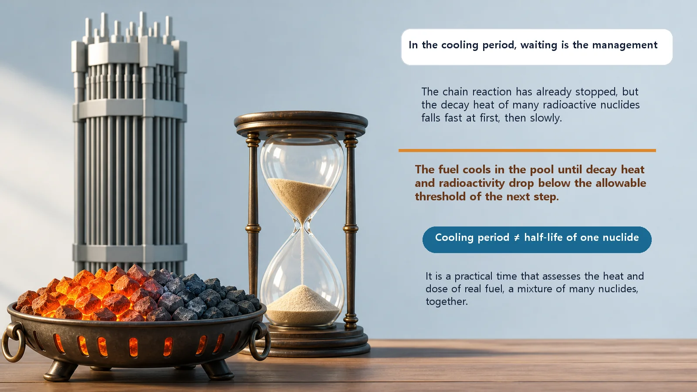
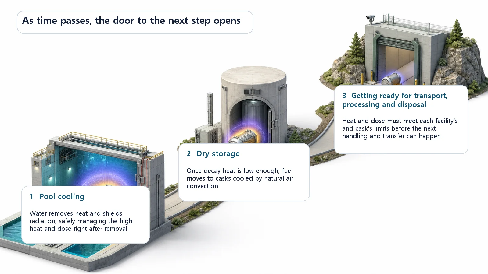

Long-Term Core Behavior & Fuel Cycle · 172
The Fire Is Out, So Why Wait Years? — What the Cooling Period of Spent Fuel Means
During the cooling period, time does the work: decay heat and radiation fall until the next step, such as dry storage, can take over.

The cooling period is the time spent fuel waits, usually in a water pool, until its decay heat and radioactivity fall below what the next step can handle. Time itself does the work as fission products decay away, fast at first and slowly later. Moving from the pool to air-cooled dry storage usually takes several years, often about 5 years as a minimum, and cooling makes fuel easier to handle, not harmless.
Ever had a barbecue? When the meat is done, the last thing you do is douse the coals with water. The fire is out. But do you then scoop those coals straight into a plastic bag and drop it in the trash? Of course not. They may look dead on the outside, but the inside stays red-hot for a long time. So you put them in a metal can, set it aside and give them time to cool completely. Rush it, and the bag melts, you burn your hand, or a fire starts somewhere else.
Spent fuel fresh out of a reactor is a lot like those coals. The "fire," the chain reaction, is already out, yet the fuel keeps producing heat and strong radiation. So it isn't moved or processed the moment it comes out; it's left quietly to cool for a while. Today's topic, the cooling period, is about that "waiting while it cools." The real questions are: why wait, and what does the waiting actually accomplish?
Why it can't be moved right away
Spent fuel is very hot and gives off strong radiation right after removal. Even with the chain reaction stopped, the fission products built up inside keep undergoing radioactive decay and releasing heat (decay heat, or residual heat). A freshly removed fuel assembly produces so much heat and radiation that no one can handle it unprotected, and it can't simply be put in a cramped container where heat can't escape.
Fortunately, this heat and radiation decrease on their own over time, without any special treatment, just by waiting, because the fission products that produce them gradually decay away. So during the cooling period, what does the real "work" isn't a machine. It's time itself, just as coals cool by themselves.

Fast at first, slow later
The cooling rate isn't the same from start to finish. Think of the coals again. Right after you douse them, the red glow fades noticeably fast. But once the surface glow is gone, the inside stays warm for a long, long time. Getting them cool enough to touch takes longer than you'd expect.
Spent fuel behaves the same way. For a while, heat and radiation drop noticeably, because the nuclides with short half-lives, the impatient ones that decay quickly, disappear first. Once they're gone, what remains are slowly decaying nuclides, so the decline becomes very gentle. That's why a simple rule like "twice the time, half the heat" doesn't work: the curve drops steeply at first and then levels off.
This is easy to confuse with half-life. A half-life is the characteristic time for one kind of radioactive substance to fall by half. Spent fuel, though, contains a jumble of many nuclides with all sorts of half-lives. So the cooling period isn't set by any single half-life; it's a more practical time: how long it takes for the heat and radiation produced by all those nuclides together to come down to a "workable" level.
The "next door" that waiting opens
So what does the waiting mean? Here's the key: once the cooling period has passed, things that weren't possible before become possible, one by one.
When fuel first comes out, its heat is so intense that putting it in a water-filled pool is practically the only option. The water absorbs plenty of heat and also provides thick radiation shielding. (How the pool does both is a story of its own, so we'll only touch on it here.) As time passes and the heat falls low enough, the fuel reaches a state where air alone can cool it, without water. Then it can move to dry storage: thick metal and concrete casks in which air circulates naturally to carry the heat away. Cool further, and long-distance transport, reprocessing, or preparation for final disposal becomes possible in turn.
So the cooling period isn't "time pointlessly passing." When heat and radiation drop and cross the threshold the next step requires, the door to that step opens. Put very simply:
Heat that must be removed now ≤ heat the next step can handle
Waiting until this holds is the essence of the cooling period. The left side (the heat the fuel produces now) shrinks on its own as time goes by, while the right side (what the next step can handle) is fixed by that method, so in the end you're waiting for the left side to drop below the right.

So how long does the cooling actually last? Moving fuel from the pool to dry storage usually takes several years, often discussed with about 5 years as a minimum. But this period depends on a country's regulations and on cask design, so it isn't a single number worth memorizing.
Common points of confusion
The most important one first. It's tempting to think, "So after the cooling period, the fuel is safe and harmless?" It isn't. Cooling makes fuel easier to handle; it doesn't make it harmless. Cooling enough to move to the next step does not mean the radioactivity is gone. Radioactivity remains for a very long time afterward, which is why fuel stays heavily shielded and managed in dry storage and in disposal alike. Cooled coals don't simply turn into soil, either.
Second, the cooling period is sometimes treated as the same thing as the pool. They're different. The pool is the place where fuel is cooled; the cooling period is how long, and why, it stays there. Place and period are separate ideas.
Finally, the end of cooling isn't final disposal. Cooling is preparation for the next step, not the destination. Cooling the fuel and deciding where and how it will ultimately be placed are separate matters.
Today's takeaways
- The cooling period is the time spent fuel removed from the reactor is kept in a pool or similar, waiting until its decay heat and radioactivity fall sufficiently below the level the next step requires.
- What does the work during this period is not a device but time itself: the fission products that produce heat and radiation decay away on their own.
- The decline is fast at first and gentle later, and because many nuclides with different half-lives are mixed together, it can't be calculated from a single half-life.
- The point of waiting is to "open the next door": as heat falls, fuel can go from storage in water to air-cooled dry storage, and then on to transport, processing and disposal preparation.
- Cooling makes fuel easier to handle but not harmless, and it is distinct from the pool (a place) and from final disposal (the destination).
Just as you let doused coals cool before clearing them away, the nuclear industry takes its time with used fuel. That "waiting" isn't idle time at all; it's the preparation that lets the next step open safely. That's the meaning packed into the phrase "cooling period."